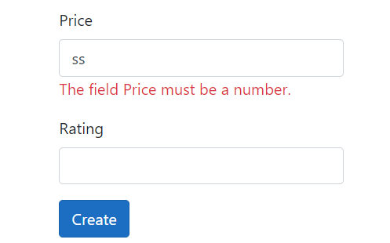
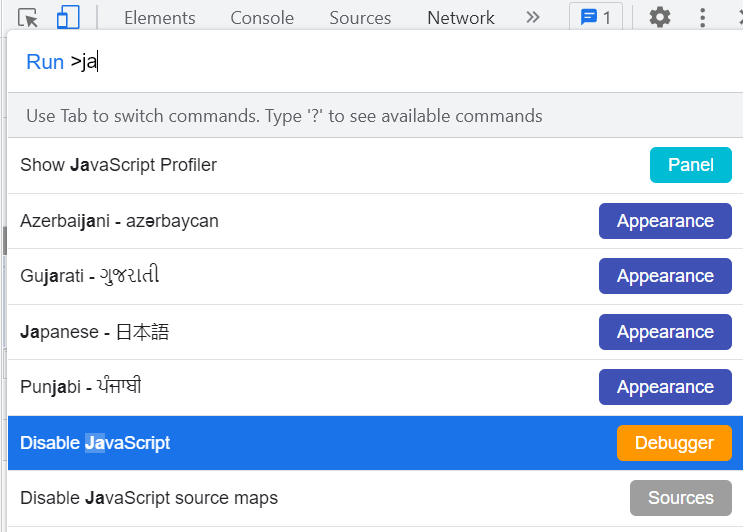
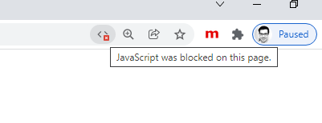
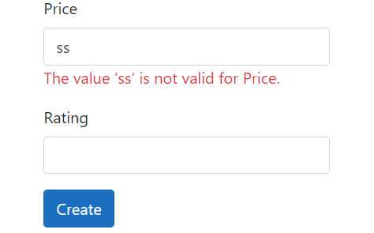
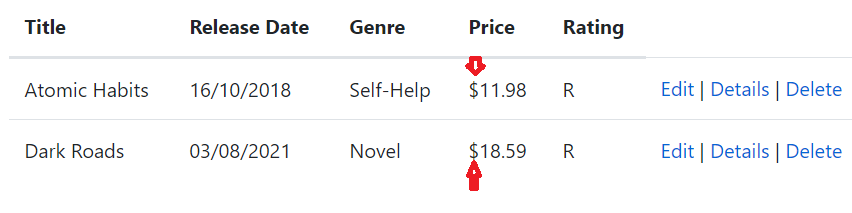
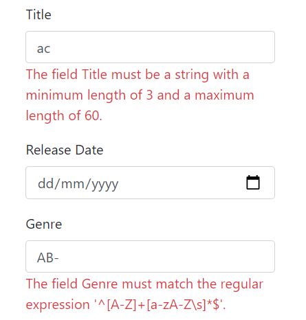
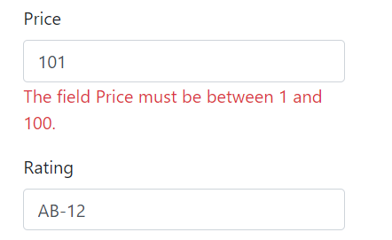

Nội dung bài học
Một trong những nội dung quan trọng nhất khi viết ứng dụng ASP.NET Core MVC là hợp lệ dữ liệu người dùng và chúng ta phải thực hiện điều này theo nguyên tắc DRY (Don’t Repeat Yourself). MVC và EF Core Code First hỗ trợ hợp lệ dữ liệu theo nguyên tắc DRY, có nghĩa là, chúng ta sẽ khai báo các luật hợp lệ dữ liệu một lần và sử dụng ở nhiều nơi trong chương trình.
Như đã từng đề cập, việc hợp lệ dữ liệu người dùng sẽ thực hiện qua hai mức người dùng (client) và máy chủ (server). Tại mức người dùng hay trình duyệt web, hợp lệ dữ liệu diễn ra tự động nhờ chương trình JavaScript. Ví dụ thực thi ứng dụng và mở form Create bằng cách nhấn chuột vào liên kết Create New, sau đó nhập vài kí tự vào trường Price sẽ xuất hiện thông điệp lỗi:
Bây giờ giả sử chúng ta tắt trình JavaScript trên trình duyệt (sử dụng Chrome vào More tools > Developer tools, nhấn tổ hợp phím Ctr + Shift + P sau đó gõ chữ javascript vào mục Run, chọn Disable JavaScript)
Khởi động lại trang Create sẽ thấy xuất hiện dấu hiệu JavaScript đã bị tắt:
Nếu sử dụng MS Edge cũng thực hiện tương tự.
Nhập lại vài từ vào trường Price sẽ không xuất hiện bất cứ thông điệp nào. Quá trình hợp lệ dữ liệu không diễn ra tại mức người dùng do chúng ta đã tắt JavaScript nhưng dữ liệu này sẽ được hợp lệ tại mức máy chủ, cụ thể, nếu chúng ta nhấn nút Create sẽ xuất hiện thông báo lỗi:
Giao diện sẽ phát sinh các thông báo khi dữ liệu người dùng không hợp lệ mà không cần cập nhật thêm bất cứ đoạn mã nào đến controller hay view. Nguyên nhân là do phương thức ModelState.IsValid trong phương thức Create:
Namespace DataAnnotations cung cấp một tập các thuộc tính hỗ trợ hợp lệ dữ liệu đến một lớp hay các thuộc tính của lớp. Trong các bài trước chúng ta đã làm quen với các thuộc tính [DataType], [Display] và [Column]; trong bài này chúng ta sẽ làm quen với các thuộc tính [Required], [StringLength], [RegularExpression] và [Range].
Mở tập tin Models / Book.cs và thêm các nội dung mới đến lớp Book (in đậm) như sau:
Các thuộc tính mới được thêm đến các trường của lớp Book với mục đích:
Thực thi ứng dụng (chú ý mở lại JavaScript nếu còn tắt )
Nhấn liên kết Create New. Kiểm tra trường Title và Genre:
Kiểm tra các trường còn lại:
Cũng cần chú ý rằng có thể ứng dụng không cho phép chúng ta nhập dấu phẩy trong trường Price. Tham khảo các bước xử lý tại đây.
Chúng ta có thể kiểm tra lại bằng cách tắt JavaScript trên trình duyệt.
Input Tag Helper dùng các thuộc tính DataAnnotations và tạo ra các thuộc tính HTML cần thiết cho quá trình hợp lệ phía người dùng (nhờ jQuery hay JavaScript). Controller và các view không cần biết các luật hợp lệ là gì, tất cả chỉ tập trung tại lớp Book. Khi chúng ta cần thay đổi một số luật hợp lệ, chỉ cần thực hiện trên lớp Book. Các luật được tạo ra ở một nơi (lớp Book) và sử dụng ở nhiều nơi mà không cần phải lo lắng các thành phần khác. Điều này cho phép chúng ta dễ dàng bảo trì và mở rộng ứng dụng trong tương lai. Đây chính là nguyên tắc DRY. Hợp lệ dữ liệu người dùng cũng được thực hiện trên trang (hay form) Edit.
Đến thời điểm này chúng ta có thể xuất bản ứng dụng web ASP.NET Core MVC.